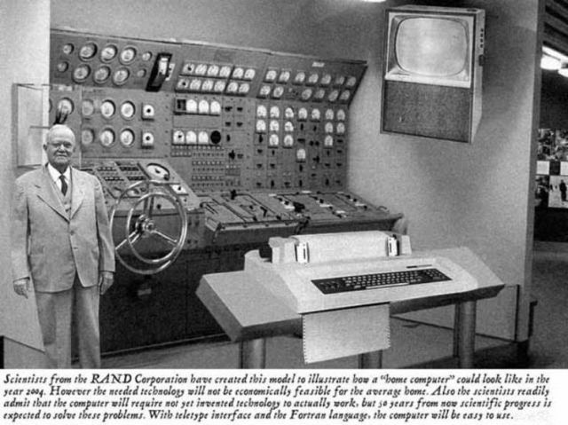
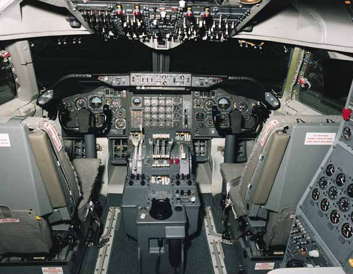
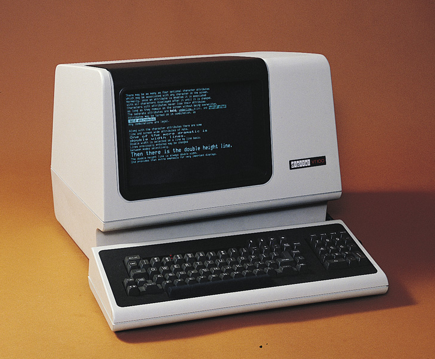
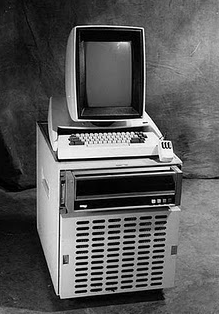
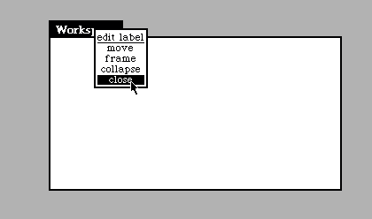
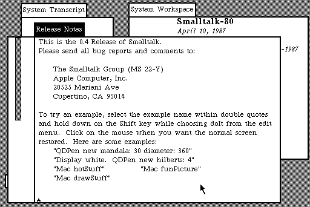

「PhotoMesa」
ユーザインタフェース技術とは 機械やシステムを人間が簡単に利用できるようにするための技術の総称です。 このような技術は非常に重要であるのに加え、 人間にとって使いにくい機械やシステムがあれば 機械やシステム側に問題があると考えるのが現在では常識になっていますが、 昔は「人間の努力や練習が足りない」と考えられることが多かったようです。 実際、楽器の演奏は難しいものですが、 楽器が下手な人が 「演奏するのが難しい楽器があるのは変だ」 などと言ったら、練習が足りない人間が何を言っているんだと思われるのが普通でしょう。 計算機や電化製品を使う場合も、 うまく使いこなせない人がそのことを恥ずかしく思ったり、 使いこなせるようになるまで頑張って練習しようと思ったりすることが 多かったようですが、 心理学者のドナルド・ノーマンが 「誰のためのデザイン?」 という本でこの考えの間違いをわかりやすく説明したおかげで、 現在はこういう考えをする開発者やユーザはほとんどいなくなったように思われます。 楽器の場合は練習すればするほど上手に演奏できるようになるものですし、 練習により愛着がわくこともありますが、 誰もが便利に使えることが望ましい機械を使うために練習や修練が必要なのであれば 困ったものだといえるでしょう。

複雑な制御パネルといえば飛行機のコックピットを連想しますが、 昔の計算機の制御パネルは飛行機のコックピットと大きく変わるものではなかったようです。 このようなものは「操作しやすさ」とか「直感的」とかとは全く無縁のものに思われます。 このような複雑な制御パネルは専門家にしか使えないことは明らかですが、 パネルの複雑さに対応するほど複雑な用途に利用できたかどうかは疑問です。

一方、最近の計算機は形態も使い方もどんどんシンプルになってきています。 パソコンの入出力装置コネクタは減る一方ですし、 iPadのようなタブレット計算機には ボタンやコネクタは数えるほどしか無いにもかかわらず、 昔に比べるとはるかに複雑な仕事ができるようになってきています。 これはすべてユーザインタフェース技術の進化のたまものだといえるでしょう。
最近はユーザのほとんどが計算機の専門家ではないのにもかかわらず、 様々なエンターテインメントに計算機を利用していますし、 記憶力が足りなかったり手足が不自由だったりといった 弱者をサポートするような用途にも 計算機が広く使われるようになってきました。 従来の計算機ユーザのほとんどは 計算機に詳しく頭脳が明晰で手先が器用な「強者」であったのに対し、 これからのユーザのほとんどはなんらかの意味での「弱者」が中心となると考えられ、 個々のユーザの弱点を補強するような用途に利用される機会がますます増えるはずです。
あらゆる人間が計算機ユーザとなることを考えると、 「いつでもどこでも」計算機が使えるだけでは不充分で、 「いつでもどこでも誰でも」使える計算機が必要になります。 様々な機器や住居などを「誰でも」苦労なく使えるようにする 「ユニバーサルデザイン」という考え方が近年注目されていますが、 現在ユニバーサルなユーザインタフェースへの大きな パラダイムシフトが起こりつつあるといえるでしょう。
初期の計算機は前の写真のような複雑な制御パネルを持っていたようですが、 計算機がより一般的に利用されるようになるにともなって、 キーボードと文字表示端末を利用するCLIが 大型計算機でも小型計算機でも広く利用されるようになりました。 大型計算機ではプログラムや計算機処理を指示するパンチカードと 呼ばれるものが利用されていたりしました。 初期のパソコンもキーボードと文字ターミナルが操作の基本になっていました。 計算機が使われるようになる以前からタイプライターが普及していたため 入力装置として自然であったことに加え、 文字列は表現力が高いために 単純な仕組みにもかかわらず複雑な入出力を利用することが可能だったからだと 思われます。 文字の入力と出力ができる文字端末さえあれば計算機を利用することができるので、 共用の大型計算機に文字端末をケーブルで接続して利用するという方法がよく使われていました。 現在のMacやiPhone, AndroidなどはUnixオペレーティングシステムが基本に なっていますが、 UnixでももともとはCLIによるユーザインタフェースの基本になっていました。
 文字端末VT100
% "のようなプロンプト文字を送り、文字端末がそれを表示する
date"のようなコマンド文字列を入力してから改行キーを押す
date"という文字列が計算機に送られる
% "のようなプロンプト文字を送り、文字端末がそれを表示する
Unixでは計算機もユーザも文字列をやりとりするだけなので、 両者を区別せずに使うことができます。 たとえばユーザが"date"と入力するかわりに "date"という文字列を出力するプログラムを使ってdateコマンドを実行することもできますし、 "date"と書いてあるテキストファイルを使ってdateコマンドを実行することもできます。 このため、CLIで使うコマンド文字列を並べるだけでそれがプログラムになってしまいます。 このようなシンプルで汎用的な設計のおかげで Unixはユーザから絶大な支持を得ることができました。 CLIを使ってプログラム開発をする場合、 計算機と文字列のやりとりをしながらプログラムを編集する必要があります。 たとえばUnixのedコマンドを使って文字端末でC言語のプログラムを開発するには 以下のようにプログラムを編集することになります。
% ed hello.c
hello.c: No such file or directory
i
#include <stdio.h>
main(){ printf("Hello!\n"); }
.
1
#include <;stdio.h>
2
main(){ printf("Hello!\n"); }
d
i
main(){ printf("Hello, world!\n"); }
.
w
56
q
% cc hello.c
% ./a.out
Hello, world!
%
printf()はC言語の関数で、
カッコの中の引数文字列を「標準出力」に出力します。
このプログラムを実行すると
計算機は"Hello, world!"とい文字列を文字端末に出力し、
文字端末はそれを画面に表示することになります。
このように、単純な入出力関数を利用するだけでインタフェースを作れてしまう点は
CLIの大きな利点といえるでしょう。
しかしこのような方法で大きなプログラムを作ることはほとんど不可能ですから、 実際には文字端末の全画面を利用してプログラムを編集する 「スクリーンエディタ」と呼ばれるプログラムが使われています。 Unixでは「vi」や「Emacs」というスクリーンエディタが古くから使われており、 今でもプログラム開発者などには人気があります。 スクリーンエディタでは全画面を利用してテキスト編集を行なうため、 画面の任意の位置に文字列を表示する必要があります。 たとえば計算機側プログラムから文字端末に対して 「画面の上から2行目/左から5桁目に"c"という文字を表示する」 といった指示をする必要があります。 一般的な文字端末というものは 計算機から送られてきた文字列がそのまま左から右に表示するようになっているので、 特別な位置に文字表示するためには 「エスケープシーケンス」という特殊な制御文字列が利用されます。 たとえば最も広く利用されていた「VT100」という文字端末では、 'ESC'(0x1b) '[' '2'(0x32) ';' '5'(0x35) 'f' というバイト列を送ることによって カーソルを画面の上から2行目/左から5桁目に移動することができます。 これ以外にもVT100では何十種類ものシーケンスが定義されています。
計算機にケーブルで接続されたVT100のような文字端末を利用する状況において こういう工夫が必要になるので、 パソコン上のUnixのスクリーンエディタを利用するときは エスケープシーケンスのようなものは必要ないはずなのですが、 これを前提としたスクリーンエディタがいまだに広く使われているため、 文字端末をエミュレートするプログラムがいまだに現役で利用されています。 たとえばMacにはTerminal.appというアプリケーションがあり、 この上でUnixのCLIを利用することができます。 Terminal.appはMacのGUI画面上のウィンドウで動作するわけですが、 その上に文字を表示するためには viやEmacsなどからエスケープシーケンスが送られていることになります。 本物のvt100を現在利用している人は皆無と思われますが、 vt100互換の文字端末エミュレータはまだまだ現役で利用されているのが面白いところです。
人間が計算機にコマンド文字列を送ると 計算機がコマンドを実行して結果を人間に返すというCLIは 現代的なユーザインタフェースとはいえませんが、 現在でも有効な場面は少なくありません。 文字列のやりとりはハードウェア的にもソフトウェア的にも実装が簡単なので、 最低限のインタフェースだけ備えておきたい機器では CLIだけ用意しておけば良いでしょう。 また、このような手法だと ユーザの操作と計算機の動作が常に決まった順番で行なわれるため、 状態遷移の扱いが簡単で、 ソフトウェア作成の手間が小さくてすみます。
インターネットの基本プロトコルはCLI的なインタフェースになっています。 たとえばインターネット上のメール転送プロトコルである SMTP(Simple Mail Transfer Protocol) はCLIを採用しているので、 以下のようにユーザが直接SMTPサーバに接続して メール転送を依頼することが可能になっています。
メール転送を管理するSMTPサーバには 普通は別のメールサーバやメーラプログラムからアクセスするものですが、 CLIが採用されているおかげで、 このようにユーザが直接操作したり実験/デバッグを簡単に行なうことができます。% telnet smtp.example.com 25 Trying 192.0.43.10... Connected to localhost. Escape character is '^]'. 220 smtp.example.com ESMTP Postfix mail from:masui@pitecan.com 250 2.1.0 Ok rcpt to:masui@pitecan.com 250 2.1.5 Ok data 354 End data with <CR><LF>.<CR><LF> test test . 250 2.0.0 Ok: queued as 78DD08F8535 quit 221 2.0.0 Bye Connection closed by foreign host. %
プログラムの作成が容易であるとか、 リモートのプログラムを操作するのが簡単だとか、 他にもいろいろ利点はあるので現在でもCLIは利用されてはいるのですが、 計算機と対等のレベルでコマンドを覚えておく必要がありますし、 キーボード操作に熟練しなければ気持ちよく使うことはできないので、 一般ユーザ向けのインタフェースとしては現在ほとんど使われていません。

Alto
Altoは商用に販売されたものではありませんが、 その後Xeroxは 1981年に Xerox Star というワークステーションを販売し、 1982年には日本語対応した JStarも 販売を開始しました。 その後、Sun Microsystems社や Silicon Graphix社などから GUIをもつUnixワークステーションが続々と販売されるようになりました。 大学においても各種のGUIの研究開発が盛んに行なわれました。 1982年にはカーネギーメロン大学でAndrewシステムが開発され、 学内で広く利用されるようになりましたし、 1984年には MITでX Window Systemが開発され、 現在でも各種のUnixマシン上で広く利用されています。
Steve JobsがPARCを見学したとき見たAltoのGUIに衝撃を受けて これをパソコン上に実現しようと考えたことは有名です。 Appleは1983年に Lisa を販売しました。 また1984年には廉価版の Macintoshも 販売を開始しました。 Appleを離れたSteve Jobsは1985年に NeXT Computerを創業し、 最初の製品NeXTcubeを1988年に発売しました。
GUIは「直接操作」を可能にします。 直接操作とは、実世界で書類を扱うのと同じような方法で計算機データを扱う方法で、 書類をつまんだ手を動かすと書類が動くのと同じような感覚で、 ファイル上でマウスボタンをクリックして動かすとファイルが動きます。 このような動きは連続的かつ可逆的であり、 逆の操作を行なうともとの状態に戻すことができます。 コマンドラインインタフェースではこのようなことができません。 データを移動するためには移動パラメタが必要ですし、 もとに戻すためには逆のパラメタをを指定する必要があります。 また、GUIでは具体的な対象に対して具体的な操作を行なうことができます。 操作対象も操作の量も目で見えます。 CLIでは、操作対象は名前で指定しなければなりませんし、 操作の量は数字やシンボルで指定しなければなりません。 GUIの操作はハンドルを回して車を運転するようなものですが、 CLIでは % wheel right 30 のようなコマンドを打つのと同じようなもので、 操作性が圧倒的に違うことは明らかです。 大抵の人にとって、シンボルや数値を利用して何かを操作するより、 具体的な直接操作の方がわかりやすいものです。 文字の読み書きができない子供でもGUIならば使うことができる場合があります。
GUIでは各種の「GUI部品」が発明され利用されてきました。 メニューやスライダーがその代表的なものです。 アイコンや メニューは複数の選択枝の中から必要なものを選択するための部品です。 メニューとGUIは直接関係があるわけではなく、 GUIが登場するより前からメニューは利用されていましたが、 テキストの列の中から必要なものを番号などで選ぶよりも、 項目の列の中から自分に必要なものをクリックする操作の方が簡単ですし、 階層的なメニューを構成することによって大量の項目から選択を行なうこともできるため、 現在のGUIでは非常に広く利用されています。 またスライダーは、小さな画面でも大きな情報を見られるようにするための工夫で、 長いテキストやWebページなどを閲覧するのに無くてはならない存在になっています。 メニューやスクロールバーのおかげで、多くの情報を画面から隠すことができるようになりました。 メニューを使うと選択項目を隠してしまうことができるので インタフェースがすっきりします。 家電製品のリモコンにボタンが多いのはメニューが使えないからです。

Altoのウィンドウのメニュー

Smalltalkのスクロールバー
GUIでは直接操作によって様々な作業を楽に行なうことができますが、 CLIの方が便利な場合も少なくありません。 例えば、名前や数字を明示的に指定する場合 文字列関係の処理はやりにくくなった *ab*.txt みたいな指定ができない 数字的処理も簡単ではない 3行消す、などと言えない 正確な操作ができない場合もある (慣れと直感) メニューみたいなもの、スライダみたいなものは存在しないのに直感になってる マウスはつかいにくいのに直感的になってる
現在のパソコンGUIはマウスのようなポインティングデバイスうまく操作しなければならないため、 これが苦手な人にとってはCLIの方が都合が良いということもあります。 このような問題に関しては「ユニバーサルデザイン」のところで説明したいと思います。
「PhotoMesa」
% ズーミングとフィルタリングで何でもできる ズーミングインタフェースを用いると大量のデータを扱うことができることに加え、 可逆的な操作が可能だという利点があります。 なんらかの操作によって画面の一部にズームインした場合、 逆の操作でズームアウトさせることは自然ですから、 ズームインして一部を拡大表示した後で ズームアウトして全体を表示するといった操作を なめらかに直感的に行なうことができます。 ズーミングインタフェースはこのような利点があるため、 新しいインタフェースとしてかなり期待されましたし、 テレビのようなコンスーマ機器に搭載しようという製品企画もあったようですが、 結局最終的に製品に採用されたものはほとんどありませんし、 パソコンのデスクトップとしても流行することはありませんでした。 あまり流行しなかったのは、 直観的なズーミング操作インタフェースが存在しなかった ことと、 迷子になって途方にくれてしまうことがある ことが最大の理由と思われます。 うっかり何も無い場所でズームインすると画面が 真っ白になってしまい、自分の居場所が全くわからなくなってしまうからです。 もちろんズームアウトするともとの画面に戻るのですが、 一瞬でも途方に暮れる状況になるのは好ましいことではありません。 また、 複数の場所を同時に閲覧することが難しい ことも問題だったかもしれません。 情報が散在している場合、 必要な情報をうまく閲覧するためには 空間把握能力と操作の熟練が必要であることが問題だったのでしょう。
キーボードやディスプレイのような計算機専用のインタフェース装置を使うのではなく、 実世界に存在する慣れ親しんだものを活用して 本当の直接操作を実現するインタフェース手法が 実世界インタフェースと呼ばれており、 これからの計算機利用の方法を示すということで注目されています。 自働ドアや照明スイッチのように、 すでに実世界で広く利用されている装置は沢山ありますが、 これらも実世界インタフェースの一種と考えられます。
Weiserはその後 このような技術を「Calm Technology」という名前で呼ぶようになりました。 また、こういった環境は 「アンビエント」 「Disappearing Computing」などと呼ばれることもあります。 計算機を持ち歩いて使う「モバイルコンピューティング」や、 計算機を服のように身につけて使う「ウェアラブルコンピューティング」は、 真のユビキタスコンピューティングに到るまでの途中段階の一形態といえるでしょう。
あらゆる人間が計算機ユーザとなることを考えると、 「いつでもどこでも」計算機が使えるだけでは不充分で、 「いつでもどこでも誰でも」使える計算機が必要になります。 装置や住居を「誰でも」苦労なく使えるようにする 「ユニバーサルデザイン」という考え方が近年注目されていますが、 これはユビキタスコンピューティングの考え方と高い親和性があります。 現状の「ウェアラブルコンピューティング」は 特殊な人が特殊な用途に使うような匂いがありますが、 ユビキタスコンピューティングの究極の姿は ユニバーサルデザインと同じ方向を向いており、 「いつでもどこでも誰でも」使える機器を目指しているといえるでしょう。
現在、ほとんどの計算機は 若者やビジネスマンを対象に作られており、 キーボードやマウスを上手に操作できない人のことは あまり重視されていませんし、 目が見えない人や手足が不自由な人のことはさらに 考慮されていないことが多いようです。 一般的な入出力装置を使用できない場合は 特殊な「障害者用機器」を使用する必要がありますが、 このような機器は値段が高かったり入手が難しかったりするため 広く使われているとはいえません。 情報機器が最初から ユニバーサルデザインにもとづいて設計されていれば このような問題は発生しなかったはずです。
固定された机の上の大きな計算機画面を、 両手で使うキーボードで操作する場合と異なり、 モバイルコンピューティングで使われる機器には 制限がつきものです。 持ち歩いて使うPDAや携帯電話などは どうしても画面が小さくなりますし、 制限のある入力装置しか使うことができません。 歩きながら使ったり満員電車の中で使ったりする場合は、 画面を見ることができないかもしれませんし、 片手しか使うことができないかもしれません。 このように各種の制限のあるモバイルコンピューティング環境は、 目や手足が不自由な人の状況と変わりませんから、 モバイルコンピューティングのために工夫された入出力装置や手法には そのまま ユニバーサルデザインとして通用するものが沢山あります。 小さな画面に効果的に情報を表示するための技術は、 目の悪い人のための表示手法として使うことができますし、 計算機を片手で操作するための技術は 手足の不自由な人が計算機を使うための技術として使うことが できます。 同じ携帯計算機でも、 歩きながら使いたいこともあれば 机の上で使いたいこともあるでしょう。 モバイル環境など いろいろな状況で使えるようにするためには 必然的にユニバーサルデザインが普及すると考えられます。
このように、 実世界指向インタフェースの研究は、もともとは 計算機画面上での計算環境を普通の紙や机の上でも実現したいといった 要求から始まったという面がありますが、 特殊な装置を使うことなく、 機械や計算機の存在を意識せずに 直感的にこれらを操作するという考え方は多くの場面で有効です。 例えば、 ドアの前に立つという単純な行動により開く自動ドアは大変便利なのと同じように、 名刺を見ると名簿データが開く計算機は大変便利でしょう。
このような、 直感的な操作にもとづく実世界指向インタフェースは 計算機操作の様々なバリアを取り除くのに大変効果的です。 たとえば、 よくできた実世界指向インタフェースにもとづく プレゼンテーションシステムでは、 表示したいスライドを投影面に向けるだけで プロジェクタ画面が投影されるかもしれませんが、 普通のPCとプロジェクタを使う場合は、 PCを立ち上げて/ プレゼンテーションプログラムを立ち上げて/ 表示したいスライドの入っているファイルを開き/ スライドを探して/ PCをプロジェクタに接続して/... のように沢山の操作と労力が必要になってしまいます。 前者の場合は誰でも簡単に使えると思われるのに対し、 現在のPCはバリアに満ちているといえるでしょう。
実世界指向インタフェースが普及すれば 様々なバリアは自然に消滅すると思われます。 たとえば電車に乗るとき、 現在は 自動改札機(=計算機)を納得させるために 券売機で切符を購入するというバリアを越える必要がありますが、 誰がどれだけ電車に乗ったかを自動的に検出する 実世界指向システムを使えば、 このようなバリアは消滅するため自然とユニバーサルデザインが 実現されることになります。
インターネット時代の現在、
Webのインタフェースが非常に重要になってきているので、
誰もがWebページの内容を理解することができるようにするための
注意が必要です。
例えば、\verb+
全世界プログラミング環境では全世界の人間が全世界の装置を制御することができる。
センサを多用したソフトウェアを作るという点では、
マイコンボードを利用したセンサプログラミングに似ているが、
センサの知識/ハードウェア工作技術/プログラミングテクニックなどが乏しい人間でも
簡単に全世界のセンサのプログラミングを行なえようになる点が重要である。
全世界プログラミングが一般化すれば、
趣味のプログラミングが再び流行するだけでなく、
生活環境も大きく変わる可能性がある。
例えば、
電灯や家電製品を操作したいときはスイッチやリモコンではなく適切なセンサを利用するのが普通になれば、
家の設計方法も変わってくるだろう。
状況に応じて留守宅の画像を中継したり録画したりするプログラムが簡単に利用できるようになれば、
防犯の方法は大きく変わるだろう。
全世界プログラミングの普及により、
時代遅れのビジネスが消滅したり、新しいビジネスのジャンルが出現する可能性もあるだろう。
全世界プログラミングの普及には時間がかかると考えられるが、
現在でもセンサを利用したプログラミングはある程度実用化されているので、
段階的にレベルを上げていくことが可能だと思われる。
既に実用になっているもの
各種のセンサの利用
遠隔地のセンサの利用
新しい応用
テキストを利用する従来型のプログラミングでは、
あらゆる対象をテキストで扱わなければならないため、
「居間のテレビで映画を見る」ことを表現するには、
インターネットの普及、センサの一般化、計算機のユビキタス化により、
世界中の情報を誰もが好きなように加工して利用できるようになった。
人間の歴史において、このようなことが可能になったのは初めてのことであり、
将来の展開が期待される。
+タグなどで画像が表示されている場合は、
その内容を\verb+
インタフェース雑感
慣れと直感
あらゆるインタフェースは直感的であるべきだと言われています。
iPadの操作は直感的だから子供でも老人でも使えるのだ言う人もいます。
しかし直感とは何でしょうか?
iPhoneやiPadのホーム画面には
様々なアイコンが並んでおり、これにタッチすることにより
アプリケーションが動くようになっています。
このような機能は本当に「直感的」といえるのでしょうか?
実際のところ、アイコンにタッチするとアプリケーションが動くという動作は
本当に直感的なものではなく、
多くのユーザがパソコンのGUIに慣れているからだと思われます。
パソコンGUIではアイコンをクリックすると
そのアイコンで表現されるアプリケーションが動いたり
データを操作したりすることができるため、
アイコンをクリックするという操作はおなじみのものですが、
パソコン以外でそのような機能を持つものはほとんどありませんし、
GUIがポピュラーになる以前にそのような行動を直観的と感じていた人は
いないと思われます。
つまり、GUIがポピュラーになり、多くの人々がそれに慣れたことによって、
アイコンによりアプリケーションが起動することが直感的だと思われるように
なったということになります。
アイコンは本当に直感的なのではなく、アイコンの操作に慣れた人が
多いということを示しています。
ペンを使って絵を書いたり操作を指示したりする方法は直感的だと
思われていますが、人間がペンで上手く字や絵を描くことができるのは
長い学校生活で練習を重ねた結果であり、
練習による慣れが無ければペン操作を直観的と感じることはなかったでしょう。
アイコンやペンは、慣れや練習の結果直感的と感じられるようになったものです。
アイコンを直観的に使うために練習は必要ありませんが、
ペンを直感的に使えるようになるには膨大な練習が必要です。
しかし学校で練習することにより直観的にペンを使うことができるようになる
ことのメリットは非常に大きいため、どこの世界でも
ペンを使う練習には長い時間をかけています。
インタフェースは直感的であるというのはそのとおりですが、
最初から直感的に使えるものは存在しません。
練習や慣れによって直感的と感じられるのです。
自動ドアは原理が単純で覚えやすく、非常に直感的なインタフェースです。
自動ドアをはじめて見た人は使い方がわからないかもしれませんが、
一度でも見れば使い方がわかり、直感的だと感じるようになるはずです。
新しいインタフェースを作る場合、
最初は直感的と感じられなかったとしても、
ユーザがすぐに慣れることができるようならば
それは直感的なものとして受け入れられるでしょう。
こういったインタフェースを「イディオム」と呼ばれます。
「のどから手が出る」のような慣用句を自分で思いつく人は少ないでしょうが、
一度聞いたらその印象を忘れることはできないでしょうし、
自分でその言葉を活用することもできるでしょう。
アイコンやメニューのような直感的なGUI部品を
インタフェースのイディオムと呼びます。
GUIでは沢山の有用なイディオムが発明されてきましたが、
新しい実世界インタフェースのイディオムが必要とされています。
複雑さとの闘い
前に書いたようにGUIの作成は大変
複雑なインタフェースを単純な方法で置き換えることができる場合があります。
複雑な装置を使わなくても
卵を立てるには
ユーザにとって直観的で使いやすいGUIを実現するためには
沢山のプログラミングが必要なことが多いため、
トータルとしての複雑さの量は変わらないという説もありますが[]、
単純な方法がまだ発見されていないという場合もよくあります。
パソコン画面の一部をWebにアップロードしたいとき、
(1) 画面のスクリーンダンプをとってファイルにセーブする
(2) 画像編集ソフトウェアを起動する
(3) スクリーンダンプされたファイルを開いて一部を選択し、選択部分をファイルにセーブする
(4) セーブされたファイルをWebにアップロードする
という手順をとるのが普通でした。
画像編集ソフトウェアを起動したり、ファイルに名前をつけたり、
画像をアップロードできるWebサイトを利用したり、
やりたいことは単純なのにもかかわらずかなりの手間がかかります。
私が開発したGyazoというシステムを使うと、
(1) Gyazoアプリを起動する
(2) アップロードしたい領域をマウスカーソルで指定する
という手順だけで自動的に領域の画像がWebサイトにアップロードされて
URLが返されるようになっています。
Gyazoを利用するようになってから、
--------
テキストエディタは同じような操作を何度も繰り返さなければならないことがよくあります。
すべての文字列Aを文字列Bに置き換えたいようなことはよくありますが、
Aを検索してからBに置き換えるという操作を何度も実行するのは面倒ですから、
ある文字列を別の文字列に置き換えるという機能が大抵のエディタには用意されています。
では、すべての数字を括弧 したい場合はどうすればよいでしょうか。
そのようなコマンドはエディタに用意されていませんから、
特別な機能が用意されていない限り、
ひとつずつ自力で処理していかなければならないでしょう。
私が作成したDynamic Macroというシステムを使うと、
このような編集処理の繰り返しを簡単に実行することができます。
Dynamic Macroの原理は単純で、
「同じ操作を2度以上繰り返した後で繰り返しキーを押すと
繰り返された操作をもう一度実行する」というものです。
文字列Aを文字列Bに置き換えたい場合は、
Aを検索してからBに置き換える操作を二度繰り返しした後で繰り返し実行キーを何度か押せばいいですし、
.....場合は
.....すると同じ操作が繰り返されます。
この方法を使うと、どのような繰り返し操作でも簡単に再実行させることができるので、
search&replaceのような特殊な機能をエディタに用意する必要がなくなってしまいます。
---------
システムのインパクトをシステムの複雑さで割った値を私は「コロンブス指数」と呼んでいます。
単純なのに役にたつシステムはコロンブス指数が高いことになります。
GyazoやDynamic Macroのようなシステムは
非常に便利ですが、システムの構造は単純なので
コロンブス指数が大きくなっています。
複雑な処理を行なうのに複雑な操作が必要なのは仕方がないかもしれませんが、
簡単なことを行なうためにも複雑な処理が必要な場所が沢山残っているのは問題です。
コロンブス指数が高いシステムをまだまだ発明していく必要があるでしょう。
全世界プログラミング
情報を自由に発信したり、
情報流れを自由に制御したりするためには
情報流の接続を定義するだけではなく、
情報流を自由にプログラミングができる必要がある。
APIを提供しているWebサービスが増えているのは良い傾向で、
誰もが簡単に世界中の情報を入手したり
世界中の装置を制御したりする
マッシュアップが簡単にできるようになってきた。
このような状況では、
世界中の誰もが世界中の装置を自由に操作することができる
全世界プログラミングが
可能になりつつある。
ある条件が成立した場合に特定の処理を実行させるというような
簡単なプログラムは広く利用されている。
目覚まし時計の時刻設定は、ある時刻になったときにベルを鳴らすというプログラミングだと
考えることができるし、
ある水量になると水道を停止する風呂の自動給水システムも一種のプログラミングだといえるだろう。
ある日付のある時刻になると特定のチャンネルの番組を録画するという
ビデオ予約システムもこのようなプログラミングの一種である。
時刻以外の様々な条件を利用すると、
目覚まし時計をセットするのと同じぐらい簡単に、
以下のような処理をプログラムすることができるようになるだろう。
センサを単純に利用した実世界プログラミングの例として
以下のような応用が考えられる。
前の例ではセンサの位置とアクションが発生する位置は同じであったが、
インターネットを介して遠隔地のセンサにアクセスすることによって
以下のようなプログラミングが可能になる。
センサに何の関係もないアクションを関連づけることも可能である。
現在はこのような応用はほとんど存在しないが、
新しいエンターテインメントやアプリケーションが生まれる可能性がある。
このようなプログラムを作成する場合、
ディスプレイ上でのエディタでテキストを編集するよりも、
具体的な操作で条件とアクションを指定する方がわかりやすい。
たとえばアナログ型の目覚まし時計では
針の位置を動かしてアラーム時刻をセットするようになっているが、
針の位置で時刻を表現するという情報提示手法や、
針の位置が一致するという条件指定は人間にとってわかりやすいため、
アラーム時刻をセットするという実世界プログラミングを
誰でも行なうことができるのだといえるだろう。
一方、一昔前のビデオデッキでは数字で時刻やチャンネルを指定するのが普通であったが、
時刻やチャンネルを数字で指定することは抽象的でわかりにくいため、
一般にビデオ録画予約は難しいと思われがちであった。
普通のプログラミングにおいても、
変数に名前をつけたり
条件や繰り返し操作を指定するような抽象的処理は難しいが、
ユーザから見えるものを実際に操作してプログラムを作成する方が
わかりやすいことが多い。
従来型の計算機においては、
変数などを利用した抽象的思考を行なうことなく
具体的な操作をもとにしてプログラミングを行なうことができるようにする方法として
例示プログラミングが提唱されており、
また
扱う対象をすべて視覚化することによりイメージをつかみやすくする
ビジュアルプログラミングのようなシステムも研究されているが、
全世界プログラミングにおいても同様の手法の適用が有効と思われる。
特にユビキタス環境では
プログラムが扱う対象が実世界に存在する具体的なものであることが多いので、
これらの手法を自然に利用することができるという利点がある。
という具合に
「居間」「テレビ」「映画」などに名前をつけて扱う必要があるが、
自分の目の前にあるテレビにわざわざ名前をつけて表現するのは面倒かつ間違いを誘発しやすい。
「TV1」のような名前のかわりに、
テレビそのものもしくは
その写真のような代理物を使うことができれば、
はるかに直観的にプログラミングを行なうことができるはずである。
抽象的理解が必要なテキストをなるべく使わず、
なるべく実物を利用してプログラミングを行なう
実世界指向プログラミング
の手法を開発するべきであろう。
watch_movie('West Side Story','livingroom','TV1')
ユビキタスインタフェースの展望
ユビキタス環境におけるインタフェースが
これからの計算機利用の主流になることは間違いない。
自動車の運転に丸いハンドルが使われているように/
QWERTY配列のキーボードが文字入力の標準として利用されているように/
マウスがグラフィカルユーザインタフェースの標準として利用されているように/
なんらかの装置や操作手法が
ユビキタス環境におけるデファクトスタンダードとなるはずである。
それがどのようなものであれ、
一度世の中に浸透してしまったものは簡単に変えることはできない。
車のハンドルの形を変えることもキーボードの配列を変えることも難しい。
ユビキタス環境のインタフェースとして適切ではないものが
デファクトスタンダードとなって浸透してしまう可能性も大きいだろう。
ユビキタス環境のインタフェース手法は、
電気のスイッチやキーボードのように、今後何十年も使い続けられる可能性があり、
そのようなインタフェースを考えるということは大変刺激的なことであり、
その責任は重大だといえるだろう。
叡智を結集して準備しておく必要がありそうである。
[[予測インタフェース]]
文字入力のいろいろ
キーボードの入力
ポインティングデバイスによる入力
インタフェースは誰が改革しているか
学会なのか
関連話題
表計算
鈴木則久の選ぶ発明
GUIも?
十大発明
ユビキタスとユニバーサル
慣れと直感
貧乏な話
Macのメニューバー
場所を節約するために考え出されたものらしい